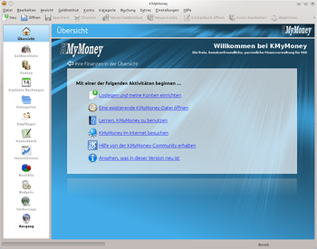

KMyMoney
Dieser Artikel wurde für die folgenden Ubuntu-Versionen getestet:
Ubuntu 14.04 Trusty Tahr
Zum Verständnis dieses Artikels sind folgende Seiten hilfreich:
KMyMoney  ist ein Finanzmanager für KDE, der das Prinzip der doppelten Buchführung verwendet. Es werden verschiedene Kontotypen, die Kategorisierung von Ausgaben und Einnahmen, die Verwaltung von Krediten und Werpapieren, umfangreiche Report- und Vorhersagefunktionen, sowie der Im- und Export über das QIF-Dateiformat unterstützt. Über HBCI können Kontoauszüge von der Bank abgeholt und mit dem Kontenbuch von KMyMoney abgeglichen werden. KMyMoney unterstützt seit der Version 0.9 das Konzept von Plugins, mit deren Hilfe KMyMoney mit weiteren Funktionalitäten, wie z.B. dem Online-Banking erweitert werden kann. Um KMyMoney HBCI-fähig zu machen wird einfach das Plugin Kmm_banking
ist ein Finanzmanager für KDE, der das Prinzip der doppelten Buchführung verwendet. Es werden verschiedene Kontotypen, die Kategorisierung von Ausgaben und Einnahmen, die Verwaltung von Krediten und Werpapieren, umfangreiche Report- und Vorhersagefunktionen, sowie der Im- und Export über das QIF-Dateiformat unterstützt. Über HBCI können Kontoauszüge von der Bank abgeholt und mit dem Kontenbuch von KMyMoney abgeglichen werden. KMyMoney unterstützt seit der Version 0.9 das Konzept von Plugins, mit deren Hilfe KMyMoney mit weiteren Funktionalitäten, wie z.B. dem Online-Banking erweitert werden kann. Um KMyMoney HBCI-fähig zu machen wird einfach das Plugin Kmm_banking  installiert. Dieses basiert auf der Bibliothek AqBanking und ermöglicht das Abrufen von Kontoständen und Umsätzen via HBCI.
installiert. Dieses basiert auf der Bibliothek AqBanking und ermöglicht das Abrufen von Kontoständen und Umsätzen via HBCI.

Installation¶
Folgende Pakete werden benötigt [1]:
kmymoney (universe)
 mit apturl
mit apturl
Paketliste zum Kopieren:
sudo apt-get install kmymoney
sudo aptitude install kmymoney
Benutzung von Online-Banking¶
Um Online-Banking in KMyMoney zu verwenden, muss zuvor AqBanking installiert werden.
Wenn man nun Kmymoney startet, dann findet man ein paar neue Menüpunkte.
"Menü -> Einstellungen -> AqBanking einrichten" - Zum Einrichten und Verwalten von HBCI-Konten.
"Menü -> Konto -> Konto aktualisieren" - Gleicht das betreffende Konto online ab.
"Menü -> Datei -> Import -> AqBanking Importmodul..."
Einrichten eines Kontos¶
Beim ersten Start von KMyMoney wird ein Standardkontenrahmen mit verschiedenen Posten für Einnahmen und Ausgaben eingerichtet. Nun sollte als erstes ein Bank-Konto eingerichtet werden. Standardmäßig geht KMyMoney zunächst davon aus, dass man die Umsätze von Hand eingibt, die Anbindung an das Online-Banking erfolgt daher erst im zweiten Schritt. Dazu "Konto -> Neues Konto anlegen" wählen. Wenn das Geldinstitut noch nicht registriert ist, kann dies mit der Schaltfläche "Neues Geldinstitut" erledigt werden. Für die spätere Anbindung ans Online-Banking ist es wichtig, dass die korrekte Bankleitzahl eingegeben wird. Beim Kontostand sollte der aktuelle Saldo des Bankkontos eingegeben werden.
Konto mit Online-Banking verbinden¶
Es muss nun mit Hilfe des Assistenten ein HBCI-Konto eingerichtet werden. Als erstes wählt man im Menü "Online Banking --> Configure Aqbanking". Es öffnet sich der Assistent mit vier Registerkarten. Dann geht man weiter wie unter Online-Banking-einrichten beschrieben.
Das nun eingerichtete HBCI-Konto muss nun noch mit dem KMyMoney-Konto verbunden werden. Dazu in KMyMoney auf der linken Seite auf "Geldinstitut" klicken. Bei der entsprechenden Bank das kleine Plus klicken, um alle zugehörigen Konten anzuzeigen. Mit einem Rechtsklick auf das Konto und dem Befehl "einem HBCI-Konto zuweisen/Map to online account" kann das KMyMoney-Konto dem eben eingerichteten Online-Banking-Konto zugewiesen werden.
Umsätze mit Online-Banking abrufen¶
Mit einem Rechtsklick auf das jeweilige Konto unter "Konten -> update account" wird die Aufgabe des Online-Updates in den "Ausgang (QUEUE)" gesetzt oder kann sofort ausgeführt werden. Nun in der linken Leiste in KMyMoney auf "Ausgang (Outbox)" klicken und anschließend "Ausführen" wählen. Der Abgleich des Kontos mit der Bank wird nun durchgeführt nach der Aufforderung zur PIN-Eingabe, diese muss blind eingetippt werden, da kein Zeichen wie * bei der Eingabe angezeigt werden. Nach der Übertragung wird ein Fenster angezeigt, in dem jeder neu übertragene Umsatz zunächst blinkt, er muss einer Kategorie zugewiesen werden, um vollständig zu sein. Erst die Zuordnung zu Kategorien von Einnahme und Ausgabe macht eine Auswertung der Umsätze möglich. Wenn der Standardkontorahmen mit Kategorien noch nicht auf die eigenen Bedürfnisse und Bedingungen angepasst ist, macht es vielleicht Sinn, diesen Punkt zu überspringen, die Kategorien zu bearbeiten und erst dann die Buchungen Kategorien zuzuordnen. Über "Splitbuchung" ist es möglich, einen einzelnen Umsatz (z.B. eine Kreditkartenabrechnung) in mehrere Buchungen aufzuteilen und damit verschiedenen Kategorien zuzuordnen.
Kontostand/Saldo korrigieren¶
Hat man beim Anlegen des Kontos keinen Startsaldo eingegeben, zeigt KmyMoney möglicherweise noch einen falschen Saldo an, da nur die Umsätze, nicht aber der Kontostand übertragen werden. Um dies nachzuholen kann man unter Einnahmen oder Ausgaben eine Kategorie (z.B. Startsaldo) anlegen und unter Kontenbuch von Hand eine Buchung mit Datum vor dem ersten übertragenen Umsatz eintragen, so dass der Saldo in KmyMoney dem tatsächlichen Saldo auf dem Konto entspricht.
Bankgeschäfte tätigen/ Überweisungen¶
Es ist in der gegenwärtigen Version von KmyMoney 4.6.3 noch nicht möglich, Überweisungen zu tätigen. Dies ist aber in Arbeit.
Exportieren¶
"Menü -> Datei -> Export -> QIF" - Ermöglicht den Export von Buchungen aus eine Quicken kompatiblen QIF-Datei .
"Menü -> Datei -> Export -> Kontovorlage" - Hiermit werden nur die Kategorien exportiert in eine .kmt Datei die XML formatiert ist.
QBankManager Export für Kmymoney¶
QBankManager starten über Alt + F2 -> qbankmanager -> ⏎ und dann wie folgt vorgehen.
"Menü -> Datei -> Export-Profil festlegen -> Export-Einstellungen festlegen" und dann weiter in diesem Dialog mit.
"-> 1. Umsatz-Filter -> Wählen -> Umsätze auswählen" - Hier können die Umsätze aus verschiedenen Konten über verschiedene Filter ausgewählt werden. Möchte man ein komplettes Konto exportieren, dann den Reiter Konto auswählen, ein Konto mit der Maus markieren und auf "Anwenden" klicken, nun noch auf "Markierte Umsätze verwenden" klicken.
"-> 2. Export-Modul -> Wählen -> Module auswählen -> Module -> csv -> Ok"
"-> 3. Profile -> Wählen -> Profile wählen -> Profile -> AqMoney1 - Profile for AqMoney1 CSV files -> Ok"
"-> 4. Zieldatei" - Hier den Pfad zur Datei manuell eingeben welche die zu exportierenden Daten enthalten soll, z.B. ~/qbankmanager-umsätze.csv. Anhand der folgende Tabelle die Auswahl überprüfen und mit ein Klick auf "Fertig" abschließen.
| Export-Einstellungen | |
| 1.Umsatz-Filter | gesetzt |
| 2.Export-Modul | csv |
| 3.Profile | AqMoney1 - Profile for AqMoney1 CSV files |
| 4.Zieldatei | ~/qbankmanager-umsätze.csv |
Importieren¶
"Menü -> Datei -> Import -> QIF" - Ermöglicht den Import von Buchungen aus eine Quicken kompatiblen QIF-Datei .
"Menü -> Datei -> -> Import -> Gnucash" - Ermöglicht den Import aus eine GnuCash Datei, es können aber keine Daten in eine bestehende Kmymoney Datei importiert werden, es wird eine neue angelegt.
"Menü -> Datei -> -> Import -> Kontovorlage" - Dieser Menüpunkt ist zur Zeit fehlerhaft, weil es nach Klicken auf "Ok" abstürzt.
"Menü -> Datei -> Import -> Aqbanking importer" - Ermöglicht den Import von Daten aus anderen Finanzprogramme die z.B. Buchungen oder Kontovorlagen im Aqbanking-Format im Ordner ~/.aqbanking speichern. Kmymoney selber speichert dort nur die Daten für den Zugang mit dem HBCI-Medium. Die restlichen Daten werden in ein binären .kmy Datei gespeichert, die in ein beliebigen Ordner liegen kann.
Die Daten können nicht direkt aus diesen Ordner importiert werden, es muss zuvor aus dem anderen Programm über "Menü -> Datei -> Aqbanking Exporter" exportiert werden in eine separaten Datei.
Kmymoney Import von QBankManager¶
Kmymoney starten über Alt + F2 -> kmymoney -> ⏎ , dann wie folgt vorgehen:
"Menü -> Datei -> Importieren -> Aqbanking importer -> Import-Assistent -> Weiter -> Datei" - Mit ein Klick auf "..." zu der vorher mit QBankManager exportierte Datei ~/qbankmanager-umsätze.csv navigieren und auswählen oder den Pfad manuell eingeben, dann weiter über:
"-> Weiter -> Import-Modul auswählen -> csv - CSV -> Ok -> Weiter -> AqMoney1 - Profile for AqMoney1 CSV files -> Weiter -> Weiter -> Weiter -> Kontoauswahl -> Buchungen importieren"" - Hier ein bereits in Kmymoney erstellten Konto auswählen in welchem die Daten importiert werden sollen und weiter über:
"-> Ok -> Fertigstellen" - Nun sollten die Daten im betreffenden Konto gelistet sein. In den meisten Fällen müssen die Daten noch korrigiert werden.
Dezimaltrennzeichen ändern¶
Änderungen an der Darstellung des Dezimaltrennzeichens sowie des Tausendertrennzeichens müssen in den KDE System Settings vorgenommen werden.
 Übersichtsartikel
Übersichtsartikel- Erstellt mit Inyoka
-
 2004 – 2017 ubuntuusers.de • Einige Rechte vorbehalten
2004 – 2017 ubuntuusers.de • Einige Rechte vorbehalten
Lizenz • Kontakt • Datenschutz • Impressum • Serverstatus -
Serverhousing gespendet von